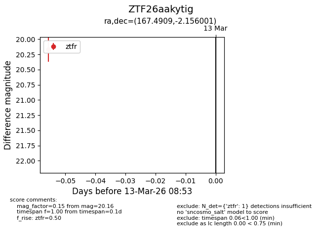
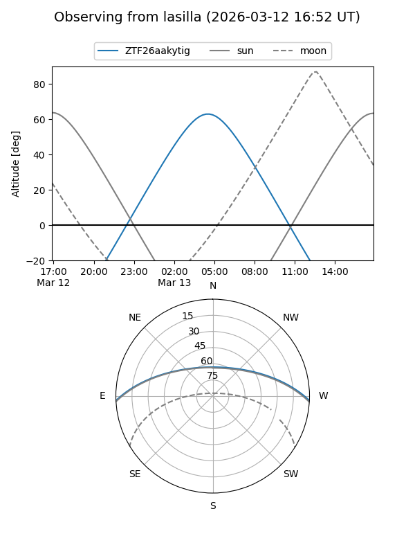
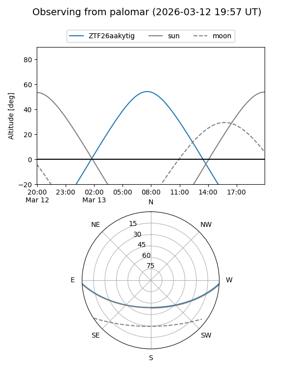
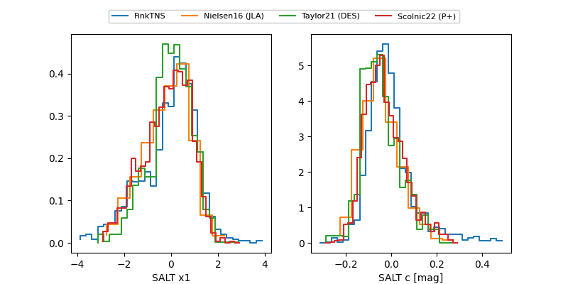

ZTF26aakytig
Target ZTF26aakytig at 2026-03-13 08:55
Aliases and brokers:
FINK: link
Lasair: link
ALeRCE: link
alt names
ZTF26aakytig (ztf,fink_ztf)
Coordinates:
equatorial (ra, dec) = 167.4909,-2.15600
equatorial (HMS+DMS) = 11:09:57.82,-02:09:21.60
galactic (l, b) = (259.0515,+51.85438)
Flags:
Photometry:
last ztfr=20.16
1 ztfr detections
Lightcurve

Visibility


Additional plots
